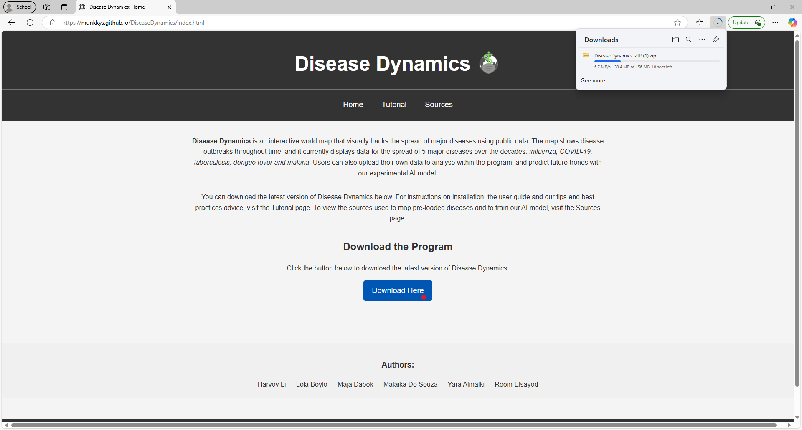
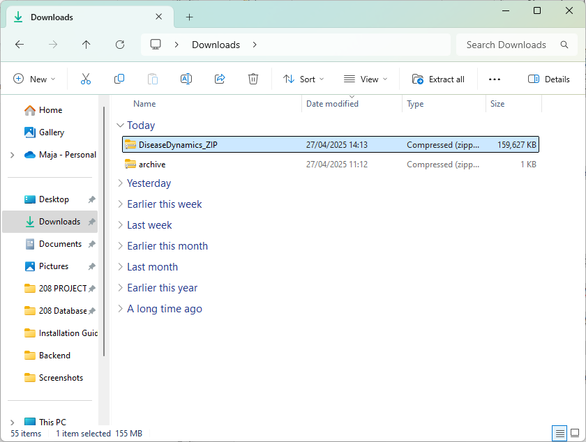
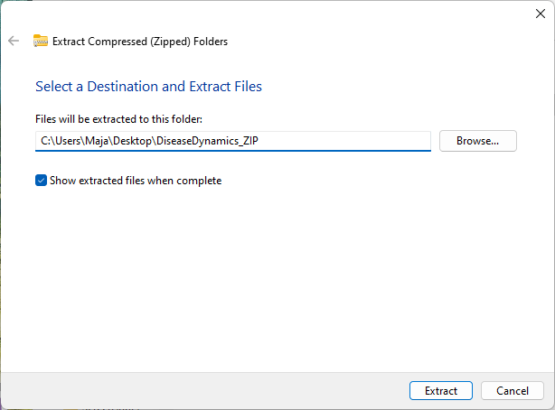
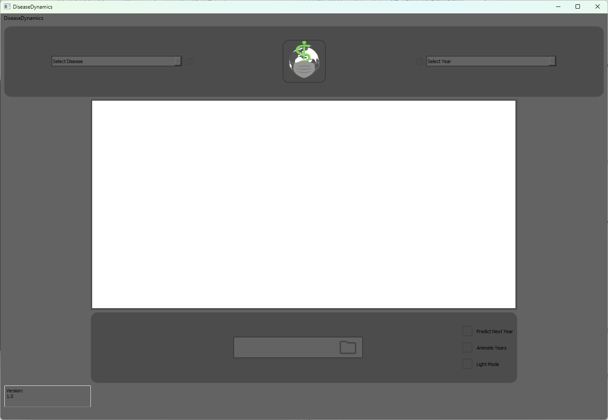
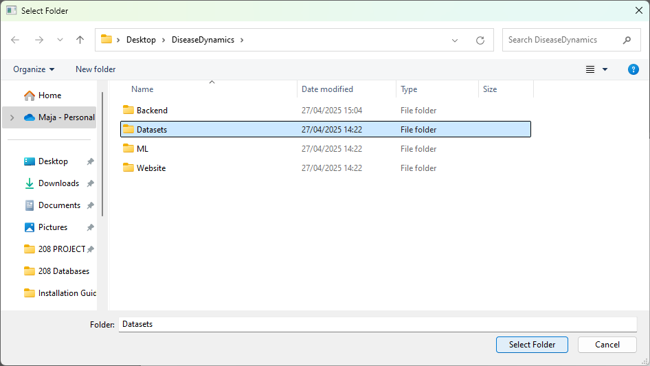

Head over to Disease Dynamics: Home and click on the Download Here button to download the ZIP file.
Navigate to your local Downloads folder, right-click on the downloaded ZIP file, and select "Extract All...".
Choose a destination folder for the extracted files.
 After extracting, you should see the following items inside the Disease Dynamics folder:
You can run Disease Dynamics on your device in two ways:
Head over to the Backend folder and run the GUI.py file.
Note: To run the python script directly, your device will need following modules installed:
PyQt5, matplotlib, geopandas, seaborn, pandas, numpy, joblib.
If you do not have these installed, enter this command into your device Terminal:
pip install PyQt5 matplotlib geopandas seaborn pandas numpy joblib
If you are unsure whether these modules are already installed, running the above command will install or update them as needed.
Important:
Please do not delete, move or rename any files within the Backend folder. Doing so may cause the application to malfunction.
After starting the application successfully, the main program window should appear:
You can now click on the folder icon at the bottom of the window to select a source folder containing the datasets you wish to examine.
You have successfully run Disease Dynamics on your device.